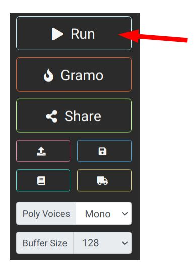

Le langage de programmation Faust
Un monde de langages de programmation
À l'image des langages utilisés par les humains pour communiquer entre eux comme le Français, l'Allemand, le Chinois, etc., il existe aujourd'hui des dizaines de langages de programmation informatique. Certains, comme Python, Java ou JavaScript sont devenus des standards et sont connus d'un grand nombre de personnes, d'autres comme Assembleur ou VHDL s'adressent à un public d'utilisateurs plus spécialisé. La plupart des langages de programmation grand public sont dits à "usage général", c'est-à-dire qu'ils peuvent être utilisés pour construire n'importe quel genre de programme pour tous types d'applications. À l'inverse, il existe des langages à usage spécifique qui ne peuvent être utilisés que pour effectuer un type de tâche donné. C'est le cas de Faust qui est placé au cœur d'Amstramgrame.
Faust a été spécialement conçu pour programmer (synthétiser) et manipuler (traiter) des sons. En effet, bien qu'il soit possible d'écrire (implémenter) des algorithmes pour la synthèse et le traitement du son dans des langages à usage général comme Python ou Java, ces derniers sont souvent trop peu performants pour produire du son de manière instantanée (en temps réel). Or, pour faire de la musique, il est nécessaire que les sons soient produits de manière immédiate. Il existe un langage à usage général qui permet de mener à bien cette tâche : C/C++. Toutefois, l'utilisation de ce dernier est réservée à des programmeurs chevronnés et nécessite des années de pratique. À l'inverse, Faust est simple d'utilisation et s'adresse à tous les publics.
Faust, c'est quoi ?
En termes purement scientifiques, Faust est "un langage de programmation pour le traitement du signal en temps réel". Dit autrement, c'est un langage fait pour programmer des sons et les produire de manière instantanée. Faust est issu d'une longue lignée de langage de programmation spécialement conçus pour le domaine de la musique. Il peut être utilisé directement en ligne à travers la plateforme Faust Web IDE (https://faustide.grame.fr) ou en l'installant sur sa machine (cette option s'adresse à des programmeurs expérimentés).
Un programme Faust peut potentiellement être très court et ne faire que quelques lignes :
Pour tester ce programme, clique sur le bouton "Éditer/exécuter le programme". Le Faust Web IDE devrait alors s'ouvrir avec le code correspondant. Clique sur le bouton "Run" pour exécuter le code dans le Faust Web IDE (la page qui vient de s'ouvrir) :

Un son devrait être produit !
Plus d'information sur l'utilisation du Faust Web IDE sont disponibles ici.
Faust peut être utilisé pour créer toutes sortes d'objets sur un grand nombre de systèmes :
- applications mobiles (iOS et Android) ;
- web-apps ;
- plugins audios (VST, AU, etc.) ;
- des programmes prêts à l’emploi pour MacOS, Linux et Windows ;
- des systèmes embarqués comme le gramophone.
De manière plus fondamentale, Faust permet également de convertir/traduire un code Faust en d'autres langages de programmation tel que C, C++, Java, LLVM, WebAssembly, etc.
Aller plus loin
Faust est utilisé comme outil d'enseignement dans des universités et comme outil de développement par des industriels ou des musiciens professionnels : une maîtrise complète de Faust ne peut s’acquérir qu'après des années d’expérience. Les différents scénarii et tutoriels disponibles sur le site d'Amstramgrame ne sont qu'une simple introduction à cet outil. Pour compléter vos connaissances sur Faust, vous pouvez :
- suivre le cours en ligne sur Faust sur la plateforme Kadenze : https://www.kadenze.com/courses/real-time-audio-signal-processing-in-faust/info (en Anglais) ;
- consulter le site de la documentation du langage Faust : https://faustdoc.grame.fr (en Anglais).